생성형 AI로 자료를 조사하고, 분석하고, 보고서·기획서까지
오늘은 생성형 AI와 함께 자료를 조사하고, 필요한 내용을 분석해 보고서 또는 기획서로 완성해 보는 날이에요. 기존에 익힌 워크플로우, 프롬프트 작성, 결과 검증 방법을 활용해 실무 문서 제작 과정을 경험합니다. 기존 데이터 분석 실습은 문서에 필요한 근거와 시각 자료를 만드는 데 활용해요.
교육 개요
| 시간 | 10:00–17:00 (점심 12:30–13:30, 실습 6시간) |
|---|---|
| 도구 | ChatGPT 프롬프트 작성, 자료 분석·검증 Genspark 자료 조사·리포트 생성 Napkin 등 시각화 도구 활용 |
| 교육 목표 | 생성형 AI를 활용해 자료를 수집·분석하고, 근거와 논리적 흐름을 갖춘 보고서/기획서를 작성할 수 있다. |
| 수업이 끝나면 | ① 업무를 단계로 나누고 AI에게 맡길 부분을 정한다 ② 목적에 맞는 프롬프트를 작성한다 ③ 자료와 분석 결과를 검증한다 ④ 결과를 보고서/기획서로 구성한다 ⑤ 재사용할 수 있는 문서 제작 프롬프트를 만든다 |
수업 전 준비
오늘 수업은 브라우저에서 진행해요. 아래 세 가지만 미리 준비해 오시면 됩니다.
- ChatGPT 계정: chatgpt.com에서 유료 계정으로 미리 로그인해 두세요. 오늘 모든 실습은 ChatGPT 유료 계정으로 진행해요. 모델은 수업을 시작할 때 함께 맞춰요.
- NotebookLM 계정: notebooklm.google.com에 구글 계정으로 로그인해 주세요. ChatGPT와는 별도 사이트라서 로그인이 따로 필요해요.
실습 파일
오늘 실습은 가상의 온라인 생활용품 쇼핑몰 "셀렉트마켓"의 2026년 3분기(7~9월) 데이터로 해요. 실제 업무 파일처럼 정리할 거리가 곳곳에 들어 있어요. 아래 세 단계로 파일을 준비해요. 파일을 ChatGPT에 올려 여는 방법은 1-1에서 함께 해요.
1. 파일 다운로드
아래 2개의 파일을 다운로드해 주세요.
2. 파일 내부 형식
받은 파일은 이름 끝이 .csv예요. CSV는 쉼표(,)로 칸을 나눠 적은 텍스트 파일이에요. ChatGPT에 올려 표로 보면 한 줄이 한 행이 되고, 쉼표가 열을 나누는 기준이 돼서 표로 보여요. 파일마다 어떤 형식으로 데이터가 들어 있는지 볼게요.
| 파일 | 한 행이 뜻하는 것 | 열 이름(머리글) | 첫 데이터 행의 값 |
|---|---|---|---|
orders_raw.csv | 주문 한 건 | 주문번호, 주문일, 지역, 채널, 담당자, 상품코드, 수량, 단가, 결제상태 | A1001 · 2026.7.1 · 경기 · 앱 · 이서연 · P001 · 2 · 15,000원 · 결제완료 |
products.csv | 상품 하나 | 상품코드, 상품명, 카테고리, 정가 | P001 · 텀블러 500ml · 리빙 · 15000 |
표를 다룰 때 쓰는 단어도 알아 둘게요. 이 단어들은 오늘 계속 나와요.
| 용어 | 뜻 | ChatGPT 시트 화면에서는 |
|---|---|---|
| 열 | 세로로 이어진 칸의 줄 | 위쪽의 A, B, C… 글자가 열 이름이에요. 1행에는 '지역', '단가' 같은 머리글이 있어요 |
| 행 | 가로로 이어진 칸의 줄 | 왼쪽의 1, 2, 3… 숫자가 행 번호예요. 주문 한 건이 한 행이에요 |
| 셀 | 칸 하나 | 열 글자와 행 번호를 합쳐 C5처럼 불러요. 왼쪽 위 칸에 지금 선택한 셀 주소가 보여요 |
| 시트 | 파일 안의 표 한 장 | 시트 화면 왼쪽 위에 이름이 보여요(예: Orders Raw) |
| 머리글 | 맨 첫 행에 적힌 열 제목 | 주문번호, 주문일, 지역… |
3. 파일 체크리스트
용어와 형식을 알았다면, 아래 내용을 하나씩 확인하면서 orders_raw.csv를 살펴보세요. 확인한 내용은 세션 3에서 AI와 함께 정리해요.
- 열 이름(머리글)에는 어떤 것들이 있나요?
- 행은 모두 몇 개인가요? ChatGPT에게 "행이 모두 몇 개야?"라고 물어 확인해 보세요.
- 비어 있는 칸이 있나요? 수량 열을 위에서 아래로 훑어보세요.
- 같은 뜻인데 다르게 적힌 값이 있나요? 지역 열을 살펴보세요.
- 날짜(주문일)가 모두 같은 모양인가요?
- 숫자 열(수량, 단가)에 "개", "원" 같은 글자가 섞여 있나요?
타임테이블
오전에는 일하는 방식(워크플로우)과 함수 생성을, 오후에는 같은 데이터를 가공하고 분석해서 보고서로 만드는 흐름으로 진행해요. NotebookLM은 오전에 한 번 가볍게 써 보고, 오후 보고 단계에서 본격적으로 사용할 거예요.
| 시간 | 세션 | 내용 | 도구 |
|---|---|---|---|
| 10:00–11:00 | 1. 생성형 AI와 문서 자동화 개요 | 기존 문서 작성과 AI 활용 비교 · 워크플로우와 프롬프트 작성법 · 업무용 AI 도구 살펴보기 | ChatGPT, Genspark, Napkin, Notion |
| 11:00–12:30 | 2. 보고서/기획서 기본 구조 및 Genspark 실습 | 보고서·기획서의 기본 구성 · 웹 기반 자료 조사 · 리포트/템플릿 생성과 문서 스타일 변환 | Genspark |
| 12:30–13:30 | 점심 | (과정 진행에 따라 시간 변경 가능) | |
| 13:30–14:30 | 3. 데이터 기반 보고서 제작 | 데이터 요약 · 인사이트 도출 · 차트/표 생성 및 문서 삽입 · 결과 검증 | ChatGPT, Napkin 등 |
| 14:30–16:00 | 4. 미니 프로젝트: 실무 보고서/기획서 제작 | 자유 주제 선정 · 자료 조사 → 분석 → 보고서/기획서 제작 | Genspark 등 |
| 16:00–17:00 | 5. 발표 및 피드백 | 완성된 보고서/기획서 발표 · 개선점과 검증 사항 공유 |
생성형 AI로 문서 제작 워크플로우 만들기
먼저 모두 같은 ChatGPT 모델로 맞춰요. 그다음 내 업무를 스케치하고, 그 업무를 5가지 단계(파악 · 정리 · 요약 · 분석 · 보고)로 쪼개서 하나의 프로세스로 정의해 봐요. 이렇게 정의해 두면 AI에게 무엇을 어느 단계에서 부탁할지 분명해져요.
시작 전: ChatGPT 화면 살펴보고 모델 맞추기
실습을 시작하기 전에 ChatGPT 웹 화면에서 자주 쓰는 곳 네 군데를 확인하고, 모두 같은 모델로 맞춰요. 오늘 수업은 GPT-5.6 Sol · Instant로 맞춰서 진행해요. 모델이 다르면 같은 프롬프트를 보내도 답변 모양이 달라지고, 만든 파일이 시트 화면으로 열리지 않을 수 있어요.

| 번호 | 이름 | 하는 일 |
|---|---|---|
| ① | 새 채팅 | 새 대화창을 열어요. 실습 주제가 바뀔 때 눌러요. |
| ② | 입력창 | 프롬프트를 붙여 넣고 Enter로 보내요. |
| ③ | + (파일 추가) | 실습 파일(CSV)을 첨부해요. |
| ④ | 모델·추론 수준 표시 | 지금 쓰는 모델과 추론 수준이 보여요. 오늘은 여기에 5.6 Instant가 보여야 해요. |
모델 확인하고 GPT-5.6 Sol · Instant로 맞추기

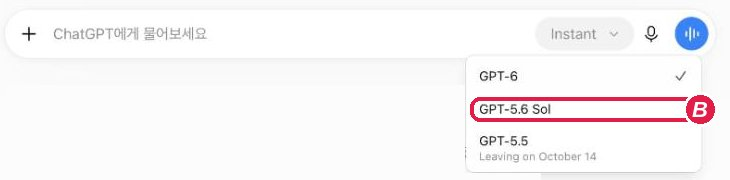

모델은 답을 만드는 AI 자체예요. GPT-6, GPT-5.6 Sol처럼 이름이 다르면 다른 AI예요. 자동차로 치면 차종이에요.
추론 수준은 같은 모델이 답하기 전에 얼마나 생각할지 정하는 설정이에요. 자동차로 치면 주행 모드예요. Instant는 오래 생각하지 않고 바로 답하는 가장 빠른 수준이에요. 수준을 높이면 답이 느려지는 대신 복잡한 문제를 더 꼼꼼히 풀어요.
오늘은 모두 같은 화면과 비슷한 답을 보기 위해 모델은 GPT-5.6 Sol, 추론 수준은 Instant로 맞춰요.
먼저, 워크플로우란?
오늘 수업 제목에 나오는 "워크플로우"라는 단어부터 풀어 볼게요.
워크플로우(workflow)는 일(work)이 흐르는(flow) 순서를 뜻해요. 일이 시작해서 끝나기까지 어떤 단계를 거치는지를 순서대로 나열한 거예요. 점심을 주문하는 일도 "메뉴 고르기 → 주문하기 → 결제하기 → 받기"라는 워크플로우가 있어요. 데이터 업무에도 같은 흐름이 있어요. "주문 파일 내려받기 → 정리하기 → 합계 구하기 → 비교하기 → 보고하기" 같은 순서예요.
"AI로 만드는 워크플로우"는 이 순서 중에서 어느 단계를 AI에게 맡기고, 어느 단계를 내가 직접 확인할지 정해 둔 흐름이에요. 이렇게 정해 두면 AI에게 무엇을 어느 단계에서 부탁할지 분명해져요. 오늘 보고서·기획서를 만들 때 쓰는 데이터 업무 워크플로우는 다섯 단계예요.
"프로세스"라는 말도 자주 나와요. 프로세스는 일을 진행하는 방식과 절차를 뜻하고, 오늘은 워크플로우와 거의 같은 뜻으로 써요. 이제 내 업무로 이 워크플로우를 직접 만들어 볼게요.
내 업무를 스케치하고 5단계로 쪼개기
네 단계로 진행해요. 먼저 메모장에 내 업무를 자유롭게 적고, 그중에서 데이터를 다루는 일을 찾아요. 그다음 그 일을 내 손으로 직접 풀어서 써 보고, 마지막에 AI와 함께 표로 정리해서 파일로 저장합니다.
STEP 1. 메모장에 내 업무 스케치하기
월요일 09:30 주문 파일 내려받기 ★
월요일 10:00 팀 회의
월요일 11:00 지난주 지역별 매출 합계 만들기 ★
월요일 14:00 팀장님께 주간 매출 보고 ★
STEP 2. 3가지 업무를 풀어서 직접 써 보기
이 수업에서는 아래 세 가지 업무를 예로 들게요. 내 업무에 별표 친 일이 있다면 그 일로 바꿔도 좋아요.
- ① 주문 파일 내려받기
- ② 지역별 매출 합계 만들기
- ③ 주간 매출 보고하기
이 세 가지를 내가 실제로 어떻게 진행하는지, 어디를 누르고 무엇을 입력하는지를 줄줄이 풀어서 직접 써 보세요. 여기서는 AI를 쓰지 않고 내 손으로 써야 해요. 내가 어떻게 일하는지는 나만 알고 있기 때문이에요.
1. 쇼핑몰 관리자 페이지에 로그인한다.
2. 왼쪽 메뉴에서 [주문 관리]를 누른다.
3. 기간을 지난주 월요일~일요일로 바꾸고 [검색]을 누른다.
4. 오른쪽 위의 [파일 다운로드]를 눌러 바탕화면에 저장한다.
5. 저장한 파일을 열어 맨 위 열 이름과 행 개수를 확인한다.
글을 쓰다가 참고가 될 만한 자료가 있으면 메모장에 같이 모아 두세요.
- 내가 로그인하는 관리자 페이지 주소(링크)
- 주문 파일을 내려받는 화면을 캡처한 이미지
- 지금 쓰고 있는 보고서 양식 파일
이 자료들은 다음 단계에서 AI에게 내 업무를 정확히 알려 주는 재료가 돼요.
STEP 3. AI로 표 만들기
이제 AI를 쓸 차례예요. STEP 2에서 쓴 글을 ChatGPT에게 보여 주고, 표로 정리해 달라고 요청해요. 아래 프롬프트를 복사해서 ChatGPT에 붙여 넣고, [ ] 부분을 내 내용으로 바꿔 보내세요.
나는 [직무]이고, 아래는 내가 하는 업무 3가지를 직접 풀어서 쓴 글이야. [STEP 2에서 쓴 글 붙여넣기] 이 3가지 업무를 하나의 표로 정리해 줘. - 행: 업무 3가지 (주문 파일 내려받기 / 지역별 매출 합계 만들기 / 주간 매출 보고하기) - 열: 해당 단계(파악·정리·요약·분석·보고 중 하나) / 내가 하는 일(순서대로) / 사용하는 화면이나 도구 / 결과물 내가 쓴 글에 없는 내용은 새로 만들지 말고, 글에 없는 칸은 '내용 없음'으로 적어 줘.
그러면 ChatGPT가 이런 표를 만들어 줘요 (예시)
| 업무 | 해당 단계 | 내가 하는 일 (순서대로) | 화면·도구 | 결과물 |
|---|---|---|---|---|
| 주문 파일 내려받기 | ① 파악 | 1) 관리자 페이지에 로그인 2) [주문 관리] 클릭 3) 지난주 기간으로 [검색] 4) [파일 다운로드]로 저장 5) 열 이름과 행 개수 확인 | 쇼핑몰 관리자 페이지, 스프레드시트 | 지난주 주문 파일 |
| 지역별 매출 합계 만들기 | ③ 요약 | 1) 지역 열과 금액 열 확인 2) 지역별로 금액을 더함 3) 합계를 표로 정리 | 스프레드시트 | 지역별 매출 합계표 |
| 주간 매출 보고하기 | ⑤ 보고 | 1) 합계표에서 결론 한 줄 정하기 2) 근거 숫자 3개 고르기 3) 한 장으로 정리해 팀장님께 보고 | 스프레드시트, 보고서 양식 | 주간 매출 보고서 한 장 |
위 표는 예시이고, 내가 쓴 글에 따라 내용이 달라져요. 표가 나오면 내가 쓴 글과 하나씩 비교하며 확인하세요. 내가 쓰지 않은 내용이 들어갔거나 빠진 내용이 있으면 ChatGPT에게 다시 고쳐 달라고 해요. 빠진 단계가 없는지는 ChatGPT가 알 수 없어요. 내 업무를 아는 사람은 나뿐이라서, 이 확인은 내가 해야 해요.
STEP 4. 만들어진 결과를 파일로 열어 볼까요?
ChatGPT가 만든 표는 대화창 안에만 있어요. 이 표를 동료에게 보내거나 보고에 쓰려면 파일로 받아 두면 편해요. STEP 3에서 표를 만든 같은 대화창에서 이어서 요청해요.
ChatGPT 채팅 화면에서 파일로 열기
방금 만든 표를 CSV(.csv) 파일로 만들어 줘. - 파일 이름은 '업무프로세스'로 해 줘 - 첫 행은 열 제목으로 해 줘 - 다운로드할 수 있는 파일로 줘
파일이 만들어지면 같은 대화창에서 아래처럼 요청해 표로 확인해요.
생성된 CSV 파일을 인터랙티브 표로 보여 줘.

ChatGPT에서 실습 파일 열어 보기
실습 파일을 ChatGPT에 올리고, 표와 시트 화면으로 여는 방법을 익혀요. 오후 데이터 실습은 모두 이 방법으로 파일을 열고 시작해요.
1-1. ChatGPT에 파일 올리고 열기
수업 전 준비에서 받은 파일을 열어서 어떤 데이터가 들어 있는지 살펴봐요. 파일은 ChatGPT 채팅 화면에서 열어요. 아래 제목을 눌러 펼쳐 보세요.
채팅에서 열어보기눌러서 펼쳐 보세요
① 파일 추가 메뉴 열기: ChatGPT에서 새 대화를 열고, 입력창 왼쪽의 [+]를 눌러 [사진 및 파일 추가]를 선택해요.
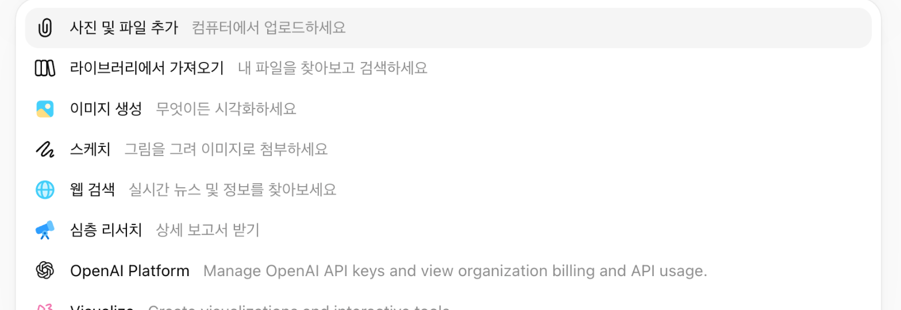
② 파일 올리기: 받은 orders_raw.csv를 선택하면 입력창에 파일이 붙어요. 파일 이름 아래에 "스프레드시트"라고 표시돼요.
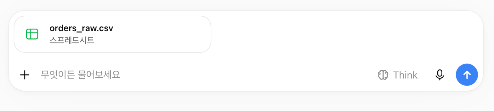
③ 표로 보여 달라고 요청하기: "첨부한 파일을 ChatGPT 안에서 인터랙티브 표로 보여 줘"라고 보내요. 표가 나오면 확대해서 전체 화면으로 열고, 어떤 데이터가 들어 있는지 천천히 훑어보세요. 표가 바로 나오지 않으면 "맨 위 10행을 인터랙티브 표로 보여 줘"라고 다시 요청해 보세요.
④ 시트 화면으로 크게 보기: 메시지를 보낸 뒤 대화창에 붙은 파일 미리보기 표의 오른쪽 위 [펼치기] 아이콘을 누르면, 오른쪽에 시트 화면이 열려요.

데이터 기반 보고서 제작: 함수 생성과 데이터 분석
데이터를 정리할 때 하고 싶은 일은 분명한데, 어떤 함수를 써야 할지 몰라서 막힐 때가 많아요. 이 시간에는 생성형 AI로 모르는 함수를 만들어 받고, 그 함수로 실제 문제를 해결해 봐요. 함수 이름을 몰라도 "이 열이 지금 이렇게 생겼는데, 이렇게 바뀌었으면 좋겠다"를 정확히 설명하면 AI가 수식을 만들어 줘요. 우리가 할 일은 그 수식이 맞는지 확인하는 거예요. 이어서 보고서에 가장 많이 들어가는 분석 4가지(비교 · 추세 · 구성비 · 교차)를 해 보고 결과를 기준값과 대조한 뒤, 그 결과로 보고서에 넣을 차트까지 만들어요.
3-1. 이번 세션에서 할 일
orders_raw.csv 파일로 이번 세션을 연습해요. 이번에는 데이터가 들어 있는 파일 안에서 데이터를 정리하거나 함수를 만들 때 AI를 활용하는 방법을 배워요. 아래 순서로 진행해요.
3-2. 먼저 데이터 파악하기
사용 파일 orders_raw.csv (주문 내역 125행). 수업 전 준비에서 받은 파일이에요.
orders_raw.csv를 ChatGPT에 올리고 아래 프롬프트를 입력해 보세요.
요청: 집계하기 전에 정리해야 할 곳을 찾아 줘. 데이터는 고치지 마. 내용: 첨부한 orders_raw.csv는 쇼핑몰 주문 내역(125행)이야. 형식: 표 (열 이름 / 문제 내용 / 예시 값 / 해당 행 수)
AI가 찾은 항목을 아래 목록과 비교해 보세요. 아래 숫자는 원본 125행 그대로 센 숫자예요. 빠진 항목은 없는지, 실제로 있는 항목인지 ChatGPT에게 "해당 행을 표로 보여 줘"라고 요청해 직접 확인해 보세요.
| 열 | 정리 항목 | 규모 |
|---|---|---|
| 전체 | 완전히 같은 행이 중복 | 5행 (125행 → 120행) |
| 주문일 | 날짜 형식 4가지 혼용 (2026-07-01, 2026.7.1, 7/8/2026, 20260701) | 60행 / 32행 / 20행 / 13행 |
| 지역 | 같은 지역의 다른 표기 (서울, 서울시, 서울특별시, seoul, 앞뒤 공백 등) | 15가지 표기 → 5개 지역 (앞뒤 공백 19행 포함) |
| 담당자 | 이름 뒤 공백 | 18행 |
| 수량 | "3개"처럼 단위가 붙은 값, 빈칸, 이상치(300, 250, 250, -2) | "개" 붙은 값 25행 빈칸 4행 이상치 4행 |
| 단가 | "15,000원"처럼 글자로 들어간 값 | 30행 |
| 결제상태 | 같은 뜻의 다른 표기 (결제완료·완료·결제 완료 / 취소·주문취소) | 6가지 표기 → 3개 상태 |
3-3. 함수 받아 내기
사용 파일 orders_raw.csv (주문 내역 125행)와 products.csv (상품 목록 6행). 두 파일을 같은 대화창에 함께 올리고 시작해요.
정리할 곳마다 프롬프트 보내기 → 결과 확인 순서로 9단계를 진행해요. 모든 단계는 같은 대화창에서 이어서 해요. 원본 열은 그대로 두고, 정리한 값은 '단가_정리'처럼 원래 열 이름 뒤에 '_정리'를 붙인 새 열로 추가해요.
수식 예시는 AI가 줄 수 있는 답 중 하나예요. 답은 매번 조금씩 달라서, 수식이 달라도 확인 값이 같으면 정답이에요. 확인 값은 모두 원본 125행 기준이라, 중복·이상치를 뺀 3-5의 기준값(97행)과는 달라요.
STEP 1. 담당자 이름의 공백 지우기
요청: '담당자' 열의 앞뒤 공백을 지우는 수식을 만들고, 그 수식을 적용한 '담당자_정리' 열을 추가해 줘. 내용: 첨부한 orders_raw.csv의 '담당자' 열에 "이서연 "처럼 이름 뒤에 공백이 붙은 값이 섞여 있어. 형식: 수식 1개, 한 줄 설명, '담당자_정리' 값별 건수 표
수식 예시
=TRIM(E2)확인 값 고유값 4명 — 김민준 26 / 박지호 29 / 이서연 32 / 최유나 38 (합계 125)
STEP 2. 지역을 5개로 통일하기
요청: '지역' 열을 서울·경기·부산·대구·광주 5개로 통일하는 수식을 만들고, 그 수식을 적용한 '지역_정리' 열을 추가해 줘. 내용: '지역' 열에 서울시, 서울특별시, seoul, 경기도, 부산광역시처럼 같은 지역이 여러 가지로 적혀 있고, 앞뒤에 공백이 붙은 값도 있어. 형식: 수식 1개, 한 줄 설명, '지역_정리' 값별 건수 표
수식 예시
=IF(LOWER(TRIM(C2))="seoul","서울",LEFT(TRIM(C2),2))확인 값 서울 46 / 경기 33 / 부산 19 / 대구 17 / 광주 10 (합계 125)
이 수식은 공백을 지우고 앞 두 글자만 남겨요. 영어로 적힌 seoul만 따로 '서울'로 바꿔요.
STEP 3. 단가를 숫자로 바꾸기
요청: '단가' 열을 모두 숫자로 바꾸는 수식을 만들고, 그 수식을 적용한 '단가_정리' 열을 추가해 맨 위 10행을 표로 보여 줘. 내용: 첨부한 orders_raw.csv의 '단가' 열에 15000 같은 숫자와 "15,000원" 같은 글자가 섞여 있어. 형식: 수식 1개, 한 줄 설명, 적용한 표(10행)
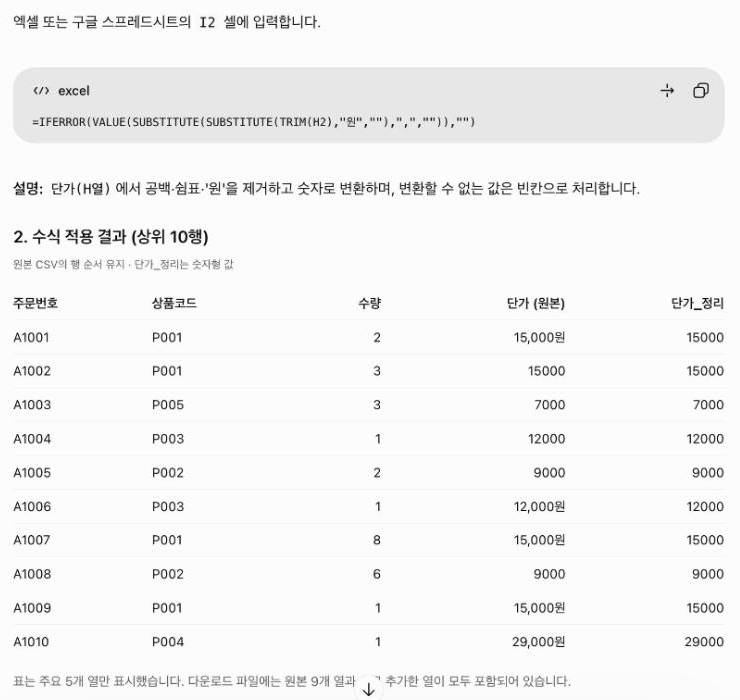
수식 예시
=VALUE(SUBSTITUTE(SUBSTITUTE(H2,",",""),"원",""))확인 값 "15,000원"처럼 글자였던 30행이 숫자로 바뀌고, '단가_정리' 열 합계가 2,086,000
STEP 4. 수량을 숫자로 바꾸기
요청: '수량' 열을 숫자로 바꾸는 수식을 만들고, 그 수식을 적용한 '수량_정리' 열을 추가해 줘. 빈칸은 빈칸 그대로 둬 줘. 내용: '수량' 열에 3 같은 숫자와 "3개" 같은 글자가 섞여 있고, 빈칸도 있어. 형식: 수식 1개, 한 줄 설명, "개"가 붙어 있던 행 수와 빈칸 행 수
수식 예시
=IF(G2="","",VALUE(SUBSTITUTE(G2,"개","")))확인 값 "개"가 붙어 있던 25행이 숫자로 바뀌고, 빈칸 4행은 빈칸 그대로
STEP 5. 상품코드로 상품명 가져오기
요청: '상품코드'로 products.csv에서 상품명을 찾아오는 수식을 만들고, 그 수식을 적용한 '상품명' 열을 추가해 줘. 찾지 못하면 '미등록'으로 표시해 줘. 내용: 첨부한 products.csv에 상품코드별 상품명이 있어. orders_raw.csv의 '상품코드' 열(P001~P006)과 연결해 줘. 형식: 수식 1개, 한 줄 설명, '상품명' 값별 건수 표
수식 예시
=XLOOKUP(F2,products!A:A,products!B:B,"미등록")확인 값 "미등록" 0건 — 텀블러 500ml 35 / 에코백 26 / 머그컵 23 / 노트 세트 15 / 무선 충전기 14 / 블루투스 스피커 12 (합계 125)
엑셀 구버전이라면
=VLOOKUP(F2,products!A:D,2,FALSE)도 같은 결과예요.STEP 6. 금액 계산하기
요청: '수량_정리' × '단가_정리'로 금액을 계산하는 수식을 만들고, 그 수식을 적용한 '금액' 열을 추가해 줘. 계산할 수 없는 행(수량 빈칸)은 빈칸으로 둬 줘. 내용: 4번에서 만든 '수량_정리' 열과 3번에서 만든 '단가_정리' 열을 써 줘. 형식: 수식 1개, 한 줄 설명, 주문번호 A1001·A1002·A1011 행의 수량_정리·단가_정리·금액 표
수식 예시
=IFERROR([수량_정리]*[단가_정리],"")확인 값 A1001: 2 × 15,000 = 30,000 / A1002: 3 × 15,000 = 45,000 / A1011: 2 × 12,000 = 24,000
[ ] 자리는 새로 만든 열이에요. 새 열은 표 오른쪽 끝에 만든 순서대로 붙어서 칸 주소가 사람마다 달라, 열 이름으로 적었어요.
STEP 7. 결제상태를 3가지로 통일하기 (IFS)
IFS는 "조건 1이면 값 1, 조건 2이면 값 2…"처럼 조건을 차례로 확인해서, 처음 맞는 조건의 값을 돌려주는 함수예요. IF를 여러 번 겹쳐 쓰지 않고 한 줄로 쓸 수 있어요. 맨 끝에 TRUE,"확인 필요"를 넣으면 어느 조건에도 맞지 않는 값을 따로 표시할 수 있어요.
요청: '결제상태' 열을 결제완료·취소·환불 3가지로 통일하는 IFS 수식을 만들고, 그 수식을 적용한 '결제상태_정리' 열을 추가해 줘. 어느 조건에도 맞지 않으면 '확인 필요'로 표시해 줘. 내용: 첨부한 orders_raw.csv의 '결제상태' 열에 결제완료, 결제 완료, 완료, 취소, 주문취소, 환불이 섞여 있어. 형식: 수식 1개, 한 줄 설명, '결제상태_정리' 값별 건수 표
수식 예시
=IFS(OR(I2="결제완료",I2="결제 완료",I2="완료"),"결제완료",OR(I2="취소",I2="주문취소"),"취소",I2="환불","환불",TRUE,"확인 필요")확인 값 결제완료 107 / 취소 11 / 환불 7 (합계 125), 확인 필요 0
건수가 다르면 "결제상태 원래 값별로 몇 건씩 어디로 바뀌었는지 표로 보여 줘"라고 요청해 어느 표기가 빠졌는지 찾아보세요.
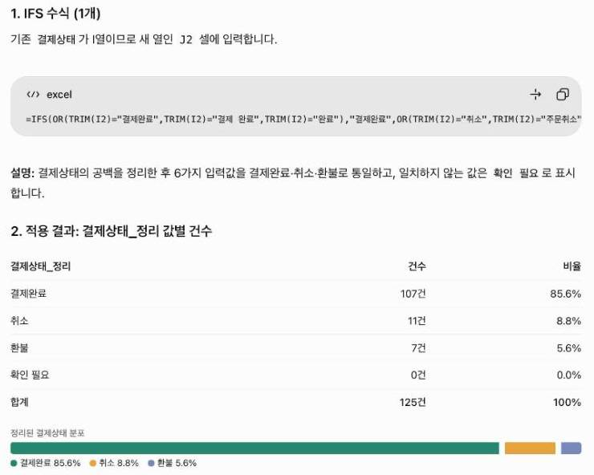
STEP 8. 지역별 결제완료 매출 합계 구하기 (SUMIFS)
요청: 지역별로 결제완료 주문의 매출 합계를 구하는 SUMIFS 수식을 만들고, 지역별 매출 표를 보여 줘. 내용: 6번에서 만든 '금액' 열, 2번에서 만든 '지역_정리' 열, 7번에서 만든 '결제상태_정리' 열을 기준으로 해 줘. 형식: 수식 1개, 한 줄 설명, 표(지역 / 결제완료 매출)와 맨 아래 합계, 결제완료 전체 매출 한 줄
수식 예시
=SUMIFS([금액],[지역_정리],"서울",[결제상태_정리],"결제완료")확인 값 경기 23,326,000 / 서울 5,207,000 / 대구 879,000 / 부산 772,000 / 광주 310,000 (합계 30,494,000) — 5개 지역 합계가 결제완료 전체 매출 30,494,000과 같은지
경기 매출이 유난히 큰 건 수량 300·250 같은 이상치가 그대로 들어 있어서예요. 이상치는 3-5의 준비 단계에서 빼요.
STEP 9. 지역별 결제완료 건수 세기 (COUNTIFS)
COUNTIFS는 여러 조건을 모두 만족하는 행이 몇 개인지 세는 함수예요. 8번의 SUMIFS가 조건에 맞는 금액을 더한다면, COUNTIFS는 조건에 맞는 건수를 센다는 점이 달라요. 조건은 "열, 조건값" 짝으로 계속 붙일 수 있어요.
요청: 지역별로 결제완료 주문이 몇 건인지 세는 COUNTIFS 수식을 만들고, 지역별 건수 표를 보여 줘. 내용: 2번에서 만든 '지역_정리' 열(서울·경기·부산·대구·광주)과 7번에서 만든 '결제상태_정리' 열을 기준으로 세 줘. 형식: 수식 1개, 한 줄 설명, 표(지역 / 결제완료 건수)와 맨 아래 합계
수식 예시
=COUNTIFS([지역_정리],"서울",[결제상태_정리],"결제완료")확인 값 서울 40 / 경기 28 / 부산 16 / 대구 14 / 광주 9 (합계 107)
합계가 7번의 결제완료 107건과 같은지 확인해요. 부분의 합이 전체와 같은지 보는 합계 대조예요. 다르면 "지역_정리 값별 건수를 보여 줘"라고 요청해 통일되지 않은 지역 표기가 남았는지 찾아보세요.

3-4. (참고) 수식을 지우고 결과값만 남기기
이전 대화에서 이어서 3-3에서 쓰던 대화창에서 이어서 해요.
3-3에서 만든 '_정리' 열은 셀 안에 수식이 들어 있어요. 팀장님께 보내거나 다른 파일에 붙여 넣기 전에는 수식을 지우고 계산된 결과값만 남겨 두면 안전해요.
요청: 지금까지 만든 표를 엑셀 파일로 만들어 줘. 수식은 모두 없애고, 수식으로 계산된 결과값만 셀에 넣어 줘. 내용: 숫자와 표 모양은 그대로 두고, '_정리'로 끝나는 열과 '금액' 열의 셀에는 수식 대신 계산된 값만 넣어 줘. 형식: 다운로드할 수 있는 엑셀 파일 1개
같은 셀, 두 파일 비교
아래 두 화면은 두 파일에서 같은 J2 셀(단가_정리)을 누른 모습이에요. 셀에 보이는 숫자는 15,000으로 같지만, 위쪽 수식 입력줄(fx)에 보이는 내용이 달라요.

=IFERROR(VALUE(SUBSTITUTE(SUBSTITUTE(H2,"원",""),",","")),H2) 수식이 보여요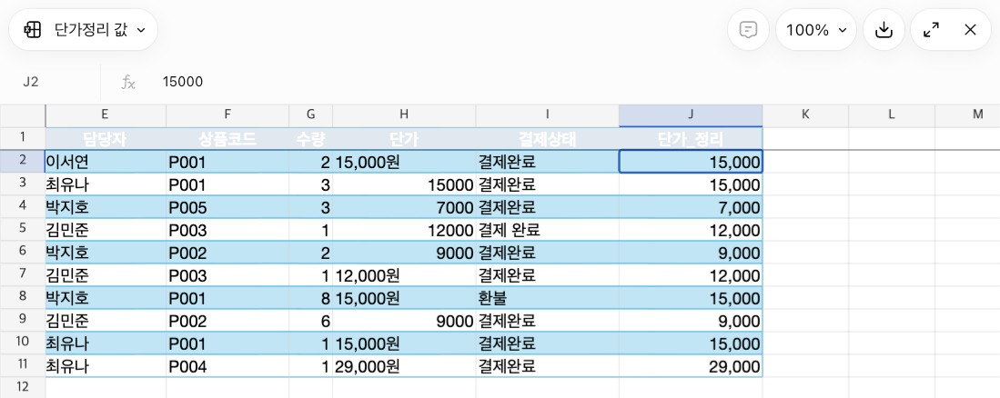
15000이라는 숫자만 보여요 (GPT-5.6 Sol · Instant, 2026년 10월 화면 예시)| 구분 | ① 수식이 들어 있는 파일 | ② 결과값만 남긴 파일 |
|---|---|---|
| 셀 안에 든 것 | 계산하는 방법(수식) | 계산이 끝난 숫자 |
| 장점 | 원본(단가 열)을 고치면 결과가 자동으로 다시 계산돼요. 어떤 계산을 했는지 fx 칸에서 확인하고 검증할 수 있어요. | 원본 열을 지우거나 옮겨도 결과가 그대로 남아요. 다른 파일에 붙여 넣거나 공유해도 숫자가 바뀌지 않아요. |
| 단점 | 수식이 가리키는 원본 열을 지우면 오류(#REF!)가 나요.다른 곳에 붙여 넣으면 가리키는 칸이 함께 밀려 엉뚱한 값이 나올 수 있어요. | 원본을 고쳐도 결과가 자동으로 바뀌지 않아요. 셀만 봐서는 어떻게 계산한 값인지 알 수 없어요. |
| 이럴 때 써요 | 작업하는 중, 원본을 고치며 결과를 확인할 때 | 팀장님께 보내는 최종본, 다른 시스템에 올릴 파일 |
수식 파일은 작업용(어떻게 계산했는지 기록), 결과값 파일은 공유용이에요. 결과값 파일만 남기면 다음 달에 같은 계산을 다시 만들어야 해요.
3-5. 자주 쓰는 분석 4가지
사용 파일 orders_raw.csv (주문 내역 125행)와 products.csv (상품 목록 6행). 새 채팅을 열고 두 파일을 함께 올리고 시작해요.
orders_raw.csv와 products.csv 두 파일로 네 가지 분석을 차례로 해 봐요. 먼저 분석에 쓸 데이터를 준비하고, 같은 대화창에서 분석 요청을 하나씩 이어서 보내세요. 요청마다 결과를 아래 기준값과 대조해 보세요.
준비. 분석할 데이터 정하기
정리 전 파일이라 그대로는 집계할 수 없어요. 어떤 행을 쓸지 먼저 알려 줘요.
요청: 분석에 쓸 데이터를 준비해 줘. 내용: 첨부한 orders_raw.csv는 정리 전 주문 내역(125행)이고, products.csv는 상품 목록이야. 상품명은 상품코드로 products.csv에서 찾아 줘. 중복 행은 1건만 남기고, 지역·결제상태 표기를 통일하고, 수량·단가는 숫자로 바꿔 줘. 금액은 수량 × 단가야. 결제완료 주문만 쓰고, 수량이 빈칸이거나 300, 250, -2인 행은 빼 줘. 형식: 사용할 행 수 한 줄
ChatGPT가 알려 준 행 수가 97행이면 준비가 된 거예요. 이 97행의 매출 합계는 4,357,000원이에요.
분석 1. 비교: 어느 지역이 많이 팔았나
요청: 지역별 매출, 주문 건수, 건당 평균 금액을 구해 줘. 내용: 위에서 준비한 데이터 형식: 매출 큰 순서의 표
| 지역 | 매출(원) | 주문 건수 | 건당 평균(원) |
|---|---|---|---|
| 서울 | 1,552,000 | 37 | 41,946 |
| 대구 | 879,000 | 13 | 67,615 |
| 경기 | 826,000 | 23 | 35,913 |
| 부산 | 772,000 | 16 | 48,250 |
| 광주 | 328,000 | 8 | 41,000 |
분석 2. 추세: 월별로 늘고 있나 줄고 있나
요청: 월별 매출과 전월 대비 증감률을 구해 줘. 내용: 위에서 준비한 데이터 형식: 표
| 월 | 매출(원) | 전월 대비 |
|---|---|---|
| 7월 | 889,000 | - |
| 8월 | 2,014,000 | +126.6% |
| 9월 | 1,454,000 | -27.8% |
분석 3. 구성비: 무엇이 매출의 대부분을 차지하나
요청: 상품별 매출, 전체 대비 비중, 누적 비중을 구해 줘. 내용: 위에서 준비한 데이터 형식: 매출 큰 순서의 표
| 상품 | 매출(원) | 비중 | 누적 비중 |
|---|---|---|---|
| 텀블러 500ml | 1,065,000 | 24.4% | 24.4% |
| 블루투스 스피커 | 1,035,000 | 23.8% | 48.2% |
| 무선 충전기 | 841,000 | 19.3% | 67.5% |
| 에코백 | 675,000 | 15.5% | 83.0% |
| 머그컵 | 552,000 | 12.7% | 95.7% |
| 노트 세트 | 189,000 | 4.3% | 100.0% |
분석 4. 교차: 지역마다 잘 팔리는 채널이 다른가
요청: 지역별·채널별 매출을 구해 줘. 내용: 위에서 준비한 데이터 형식: 행은 지역, 열은 채널인 교차표
| 지역 | 앱 | 웹 | 오프라인 |
|---|---|---|---|
| 서울 | 854,000 | 580,000 | 118,000 |
| 대구 | 627,000 | 102,000 | 150,000 |
| 경기 | 341,000 | 402,000 | 83,000 |
| 부산 | 178,000 | 594,000 | 0 |
| 광주 | 183,000 | 145,000 | 0 |
숫자가 다르다면 준비 단계에서 어떤 행을 뺐는지가 다른 거예요. ChatGPT에게 "사용한 행 수와 뺀 행 수를 알려 줘"라고 물어보세요.
3-6. 보고서에 넣을 차트 만들기 (ChatGPT, NotebookLM)
사용 파일 orders_raw.csv (주문 내역 125행)와 products.csv (상품 목록 6행). 3-5에서 쓰던 대화창에서 이어서, 그 분석 결과로 차트를 만들어요.
보고서에는 숫자만 나열하는 것보다 그림이 함께 있으면 읽기 쉬워요. 월별 매출 숫자는 ChatGPT로 차트를 만들고, 보고서의 결론과 근거는 NotebookLM으로 그림을 만들어 봐요.
버전 A. ChatGPT로 차트 만들기
ChatGPT는 숫자를 받아서 막대·선·원 차트를 그려 줘요. 어떤 내용을 어떤 형식으로 그릴지 알려 주면 돼요.
요청: 보고서에 넣을 차트를 만들어 줘. 내용: 7월 889,000원 / 8월 2,014,000원 / 9월 1,454,000원 형식: 막대 차트, 제목은 "3분기 월별 매출", 막대 위에 금액 표시, 이미지 파일로 저장
버전 B. NotebookLM으로 도식 만들기
NotebookLM은 소스로 넣은 글을 바탕으로 그림을 만들어 줘요. 아래 글을 새 노트북의 소스로 붙여 넣어 보세요.
3분기 매출 요약 서울이 매출 1위 (1,552,000원) 앱 채널이 매출의 절반 (50%) 8월이 가장 높음 (7월의 2.3배)
버전 C. 엑셀 파일에 집계 표와 차트 함께 넣기
보고서를 엑셀로 주고받는다면, 집계 표와 그 표로 그린 엑셀 차트를 한 파일에 같이 넣어 달라고 해요. 3-5에서 쓰던 대화창에서 이어서 보내요.
요청: 위에서 구한 집계 결과로 엑셀(.xlsx) 파일을 만들어 줘. 집계 표와, 그 표의 데이터로 그린 엑셀 차트를 한 시트에 함께 넣어 줘. 내용: 표 1은 월별 매출(7월 889,000원 / 8월 2,014,000원 / 9월 1,454,000원), 표 2는 지역별 매출(서울 1,552,000원 / 대구 879,000원 / 경기 826,000원 / 부산 772,000원 / 광주 328,000원)이야. 표마다 바로 옆에 차트를 넣어 줘(월별은 세로 막대, 지역별은 가로 막대). 차트는 그림이 아니라 표의 셀을 데이터로 쓰는 엑셀 차트로 만들어 줘. 형식: 다운로드할 수 있는 엑셀 파일 1개, 시트 이름은 '보고서용 차트'
버전 A의 차트는 이미지라서 숫자가 바뀌면 다시 그려 달라고 해야 해요. 버전 C의 엑셀 차트는 표와 연결되어 있어서, 표의 숫자를 고치면 차트도 함께 바뀌어요. 매달 숫자만 바꿔 쓰는 보고서라면 버전 C가 편해요.
버전 D. (선택) HTML 파일로 인터랙티브 보고서 만들기
버전 C와 같은 숫자로, 결과물만 휴대폰에서 보기 좋은 인터랙티브 보고서로 바꿔요. 같은 대화창에서 이어서 보내요.
요청: 같은 집계 결과로 휴대폰에서 보기 좋은 인터랙티브 보고서를 HTML 파일로 만들어 줘. 내용: 월별 매출(7월 889,000원 / 8월 2,014,000원 / 9월 1,454,000원), 지역별 매출(서울 1,552,000원 / 대구 879,000원 / 경기 826,000원 / 부산 772,000원 / 광주 328,000원). 막대를 누르면 금액이 보이게 해 줘. 형식: 다운로드할 수 있는 .html 파일 1개, 휴대폰 세로 화면에 맞게
ChatGPT가 만든 HTML 파일을 고치지 않고 그대로 올려 두었어요. 휴대폰으로 열어 막대를 눌러 보세요.
버전 E. (선택) 실시간 데이터 대시보드 만들기
- 목표: 데이터 파일을 구글 스프레드시트로 바꾸고, 구글 데이터스튜디오 대시보드에 연결해 봐요. 시트의 숫자가 바뀌면 대시보드에도 반영돼요.
- 툴: 데이터 원본 파일, 구글 스프레드시트, 구글 데이터스튜디오, 구글 계정(필수)
사용 파일 orders_clean.csv (정리된 주문 내역 120행, 집계대상 Y/N 열 포함). 아래에서 내려받아요.
STEP 1. 데이터 파일을 구글 스프레드시트로 바꾸기
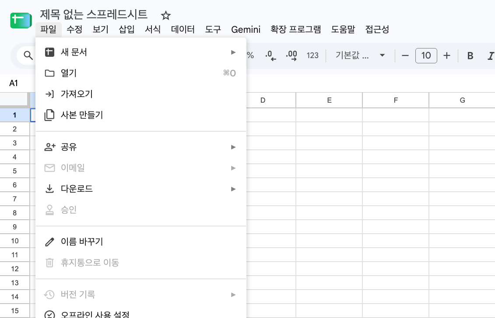
orders_clean.csv를 골라요.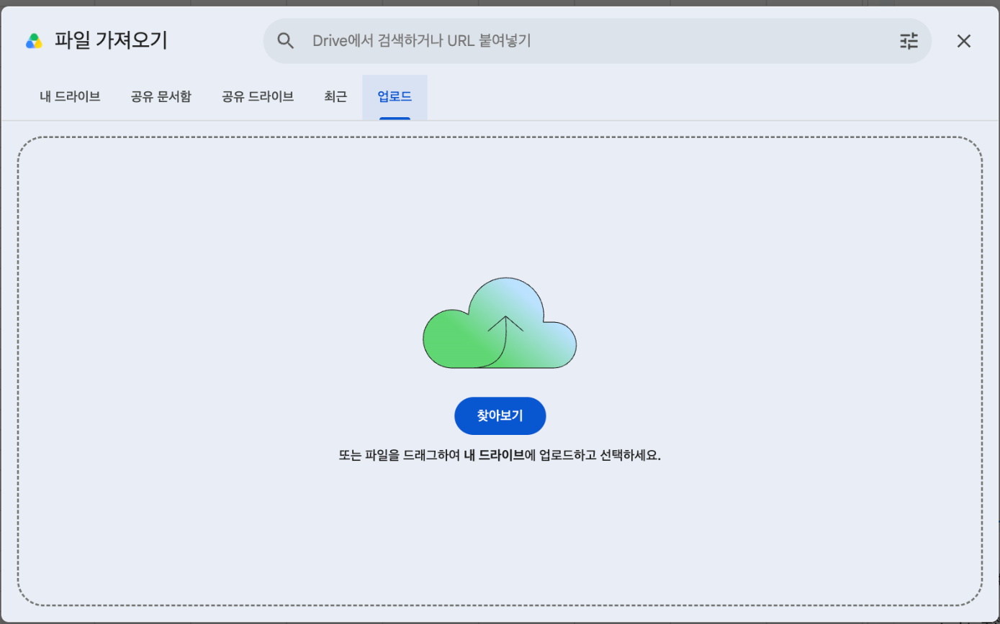
STEP 2. (선택) 시트 원본을 링크로 공유하기
대시보드를 보는 사람에게 원본 데이터도 함께 보여 주고 싶을 때만 해요.
STEP 3. 데이터스튜디오에서 보고서를 만들고 시트 연결하기
STEP 4. 집계대상 Y만 남기는 필터 걸기
시트에는 120행이 다 들어 있어요. 3분기 매출은 집계대상이 Y인 97행만 더해야 하므로 보고서 전체에 필터를 걸어요.
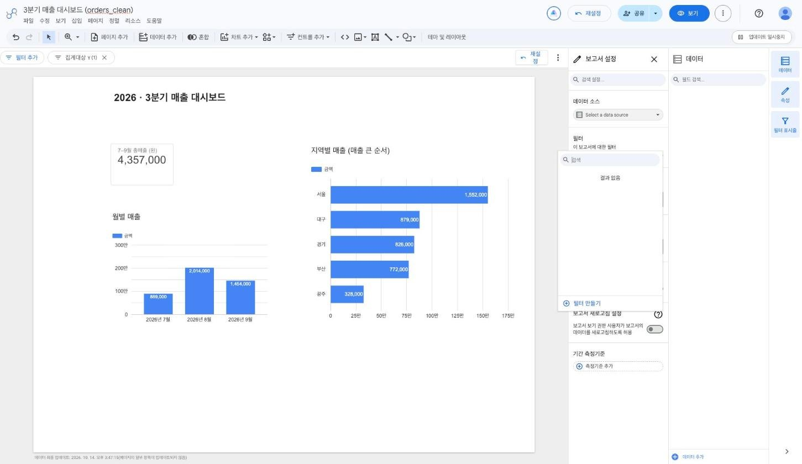
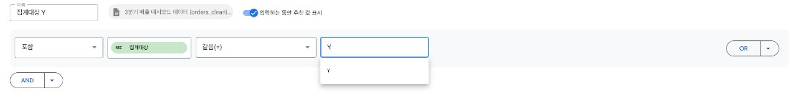
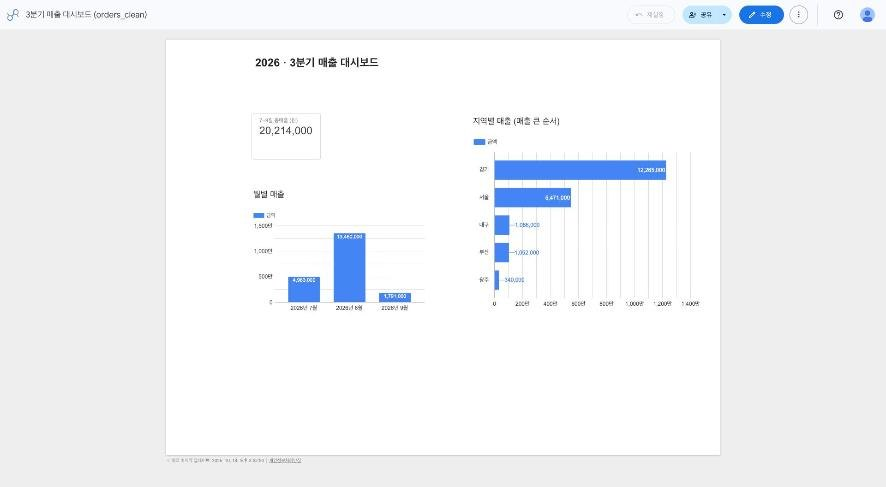
STEP 5. 차트 3개 넣기
버전 D와 같은 구성(총매출, 월별 매출, 지역별 매출)으로 만들어요. 차트는 툴바의 [차트 추가]에서 골라 캔버스에 끌어 그리고, 오른쪽 [설정] 탭에 필드를 끌어다 놓아요.
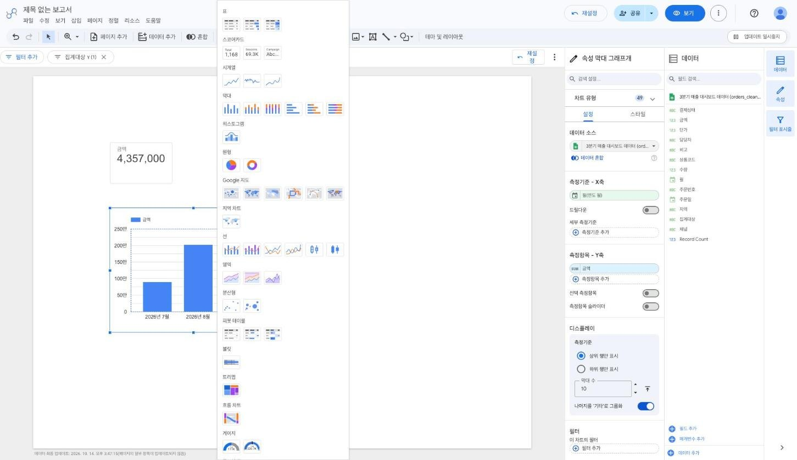
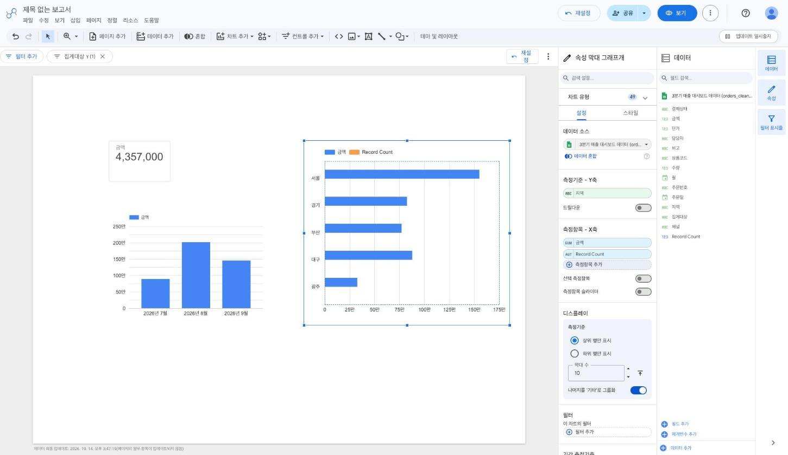
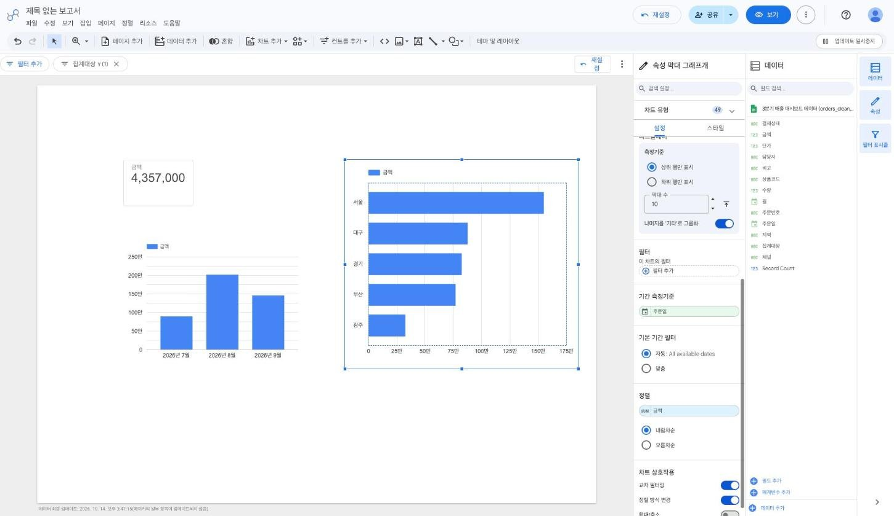
차트 숫자가 아래 표와 같은지 확인해요. 버전 C, D와 같은 숫자예요.
| 항목 | 값 |
|---|---|
| 총매출 | 4,357,000원 |
| 월별 | 7월 889,000원 / 8월 2,014,000원 / 9월 1,454,000원 |
| 지역별 | 서울 1,552,000원 / 대구 879,000원 / 경기 826,000원 / 부산 772,000원 / 광주 328,000원 |
STEP 6. 보기 좋게 다듬기
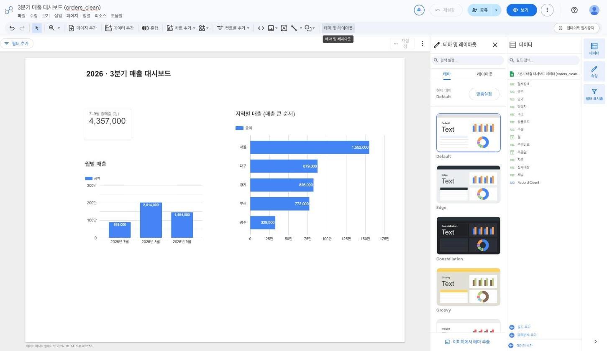
STEP 7. 대시보드를 링크로 공유하기
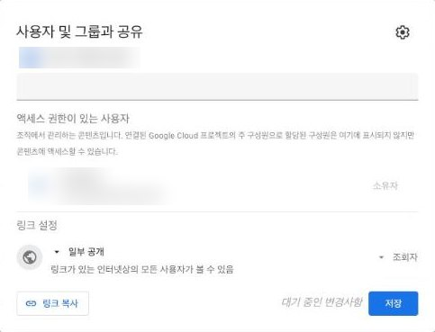
관리자가 외부 공유를 막아 두었으면 [일부 공개]가 보이지 않거나, 회사 밖 사람에게는 차트가 비어 보일 수 있어요. 공유한 뒤 시크릿 창에서 보기 링크를 한 번 열어 확인해요.
STEP 8. 실시간으로 바뀌는지 확인하기
결과물 링크 3종
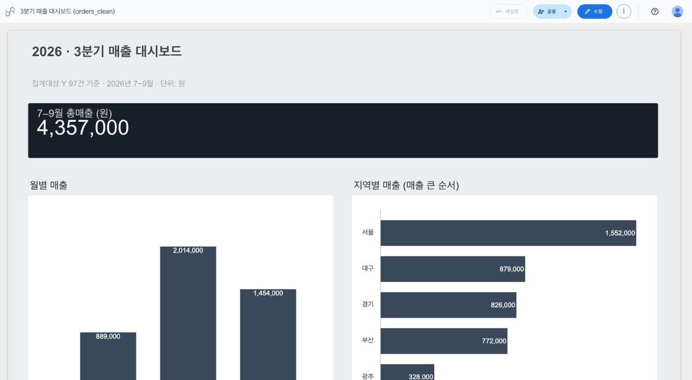
버전 F. (선택) 실시간 데이터 대시보드 웹페이지 만들기 (Apps Script)
- 목표: 버전 E와 같은 구글 시트를 원본으로, 대시보드를 Apps Script 웹페이지로 만들어 배포해요. 휴대폰에 맞춘 보기 전용 페이지이고, 시트의 숫자를 고치면 페이지를 새로고침할 때 바로 반영돼요.
- 툴: 구글 스프레드시트, Apps Script, ChatGPT, 구글 계정(필수)
사용 파일 orders_clean.csv를 올린 구글 시트 (버전 E의 STEP 1에서 만든 시트)
버전 E는 클릭만으로 만들지만 화면 모양은 데이터스튜디오가 정한 틀 안에서만 바꿀 수 있어요. 버전 F는 ChatGPT가 만든 코드로 화면을 직접 만들기 때문에 휴대폰 화면에 맞춰 자유롭게 꾸밀 수 있어요.
STEP 1. 구글 시트 준비하기
orders_clean.csv를 구글 시트로 가져와 열어요. 이미 만든 시트가 있으면 그 시트를 그대로 써요.STEP 2. 시트에서 Apps Script 열기
Code.gs가 하나 있어요. 이렇게 시트에서 연 스크립트는 그 시트와 연결돼 있어요.STEP 3. ChatGPT로 코드 만들기
새 대화창에서 아래 프롬프트를 그대로 보내요. 열 이름과 계산 규칙을 알려 줘야 AI가 시트 구조를 짐작하지 않고 정확하게 만들어요.
요청: 구글 Apps Script 웹 앱으로 휴대폰에서 보기 좋은 매출 대시보드 페이지 코드를 만들어 줘. 내용: 구글 시트의 [확장 프로그램 → Apps Script]에서 연 프로젝트야(시트에 연결된 스크립트). 데이터는 같은 스프레드시트의 'orders' 시트에 있고 1행이 제목이야. 열은 주문번호, 주문일, 월, 지역, 채널, 담당자, 상품코드, 수량, 단가, 금액, 결제상태, 집계대상, 비고야. - 집계대상이 'Y'인 행만 집계해서 ① 총매출(금액 합계) ② 월별 매출(7·8·9월) ③ 지역별 매출(큰 순서)을 보여 줘. - '월' 열은 날짜로 바뀌어 있을 수 있으니 '주문일' 기준으로 월을 계산해 줘. - 집계는 Code.gs에서 끝내고 화면에는 숫자만 넘겨 줘. 페이지를 열 때마다 시트의 최신 값을 읽어야 해. - 보기 전용이야. 수정·입력 기능은 넣지 마. 형식: Code.gs와 index.html 두 파일의 전체 코드. 휴대폰 세로 화면에 맞춘 카드형 디자인(가로 스크롤 없음, 큰 글씨), 외부 라이브러리 없이 HTML·CSS로 막대 표시, 금액은 1,234,000원 형식. 각 코드를 어느 파일에 붙여 넣는지도 알려 줘.
STEP 4. 코드 붙여 넣고 저장하기
Code.gs를 열고, 원래 있던 내용을 모두 지운 뒤 ChatGPT가 준 Code.gs 코드를 붙여 넣어요.STEP 5. 웹 앱으로 배포하기
관리자 설정에 따라 [모든 사용자]가 없고 "(회사 이름) 내 모든 사용자"만 보일 수 있어요. 그러면 회사 밖 사람은 이 페이지를 볼 수 없어요.
STEP 6. 휴대폰으로 열어 확인하기
요청: 웹 앱 URL을 열었더니 아래처럼 나왔어. 원인을 알려 주고 고친 전체 코드를 다시 줘. 내용: (오류 문구나 화면에 보이는 숫자를 여기에 붙여 넣기) 정답은 총매출 4,357,000원, 7월 889,000원 / 8월 2,014,000원 / 9월 1,454,000원이야. 형식: 원인 한두 줄 + 고친 파일 이름과 전체 코드
STEP 7. 실시간으로 바뀌는지 확인하기
STEP 8. 코드를 고친 뒤 다시 배포하기
시트의 데이터만 바뀌면 다시 배포할 필요가 없어요. 코드를 고쳤을 때만 다시 배포해요. 예를 들어 디자인을 바꾸고 싶으면 같은 대화창에서 이렇게 요청해요.
요청: index.html의 디자인만 바꿔 줘. 계산 방법과 Code.gs는 그대로 둬. 내용: 맨 위에 '2026 · 3분기 매출' 제목과 '집계대상 Y 97건 기준 · 단위: 원' 부제를 넣고, 총매출 카드는 짙은 남색 배경에 흰 글씨로 해 줘. 막대 색은 한 가지 색으로 통일해 줘. 형식: index.html 전체 코드
보고서·기획서 작성에 적용하기
앞서 익힌 워크플로우, 프롬프트 작성, 데이터 검증 방법을 문서 제작에 적용해요. 보고서는 근거를 바탕으로 현황과 결과를 전달하고, 기획서는 목표와 실행 전략을 제안하는 데 초점을 둡니다.
문서 구조 빠르게 점검하기
- 보고서: 서론(목적·배경) → 본론(자료·분석·근거) → 결론(핵심 결과·제안)
- 기획서: 목표 → 현황과 문제 → 전략·실행 방안 → 기대 효과·일정
- 최종 검토: 주장마다 근거가 있는지, 수치와 출처가 정확한지, 문단 간 논리가 자연스러운지 확인해요.
미니 프로젝트 진행 순서
- 업무와 독자를 고려해 자유 주제를 정해요.
- Genspark 등으로 자료를 조사하고 출처를 확인해요.
- 핵심 질문과 인사이트를 정리하고, 필요한 표·차트를 만들어요.
- 보고서 또는 기획서로 구성하고 제목·목차·결론을 다듬어요.
- 완성본을 발표하고 사실성·논리·실행 가능성에 대한 피드백을 반영해요.